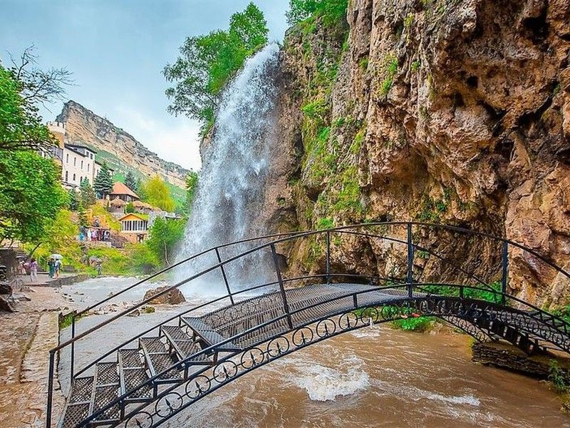
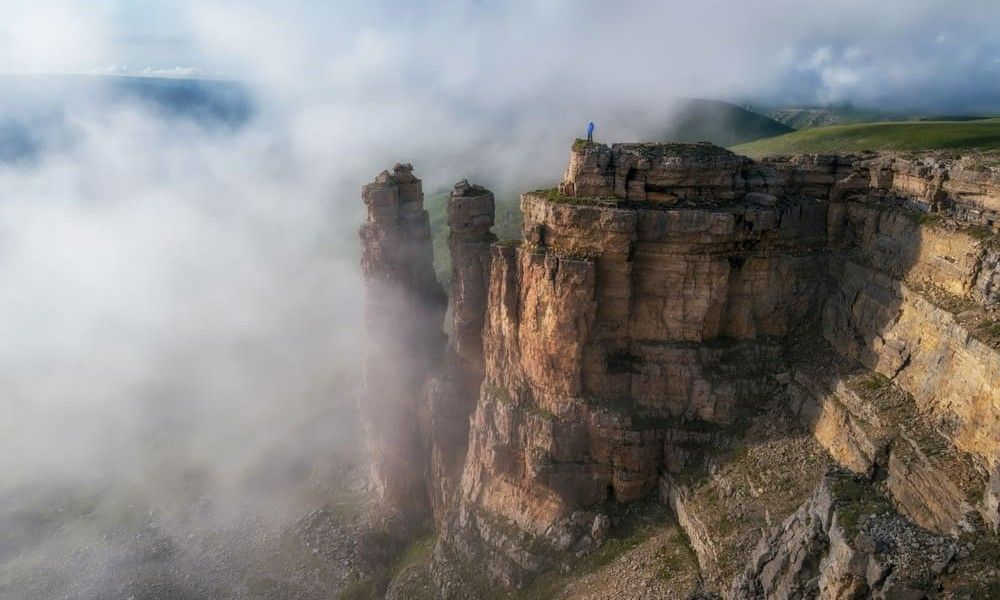

Здесь — однодневные поездки с возвращением в Кисловодск. Продолжительность дана для ориентира, с дорогой; точные остановки, свободные даты и цены смотрите у организатора.
9 направлений

Медовые водопады · фото Tripster
Рядом с Кисловодском
Медовые водопады и гора Кольцо
Водопады и гора Кольцо. А ещё — стеклянный мост, если включить его в программу.
Время
Около 4–5 часов
Пешком
Лестницы и дорожки у воды
Дорога
Недолгая поездка; спуск в ущелье пешком
Подробнее о поездке
В классический маршрут обычно входят гора Кольцо, Медовые водопады и чайный домик. У водопадов есть ступени и мостики; для прогулки пригодится обувь с нескользкой подошвой.
Стеклянный мост
Хотите посетить новый стеклянный мост? Назовите его организатору при заказе. Уточните, открыт ли он на вашу дату, сколько стоит посещение и будет ли время на него в программе.
Доплаты: Входные билеты, обед и дополнительные развлечения уточняются отдельно.
День среди горных ущелий, бирюзовой воды и снежных вершин.
Время
Около 12–13 часов
Пешком
Короткие прогулки; подъём по канатке
Дорога
Ранний выезд, долгая дорога по горным ущельям
Подробнее о поездке
Один из вариантов — через озеро Гижгит к поляне Азау, откуда поднимаются по канатной дороге. Уточните конкретные остановки: программы разных гидов различаются. Наверху нужна тёплая одежда даже в тёплый день.
Выше облаков
Работа канатной дороги зависит от погоды и технического режима. Поездка к Эльбрусу не гарантирует подъём или ясный вид на вершины.
Доплаты: Канатная дорога, питание и отдельные входные билеты могут оплачиваться дополнительно.
Острые вершины, хвойные леса и панорамы с канатной дороги.
Время
Около 10–12 часов
Пешком
Прогулки на остановках; канатка по желанию
Дорога
Длинная поездка; маршрут может идти через перевалы
Подробнее о поездке
В зависимости от программы по дороге заезжают к древнему храму, горной реке, Сырным пещерам или на перевал Гум-Баши. В Домбае можно выбрать подъём на канатке и время для прогулки.
Маршрут по сезону
Летние и зимние остановки отличаются. Перед оплатой спросите, что открыто и какие места будут в программе именно в ваш день.
Доплаты: Канатная дорога, обед и часть дополнительных остановок обычно оплачиваются отдельно.
Горные пейзажи, храмы и целый день вдали от городской суеты.
Время
Около 12–13 часов
Пешком
Зависит от программы; к Лику Христа — много ступеней
Дорога
Ранний выезд и продолжительные переезды
Подробнее о поездке
Экскурсионный Архыз часто объединяет горный курорт и исторические места. Уточните, включает ли выбранный вариант Аланское городище, Лик Христа и подъём на канатной дороге.
Водопады — отдельная программа
Софийские водопады и горные озёра обычно требуют другого маршрута и пешей части. Не рассчитывайте увидеть их в обычной обзорной поездке без отдельного согласования.
Доплаты: Канатка, городище и питание могут не входить в стоимость.
Серпантин навстречу Эльбрусу, видовые остановки и водопады.
Время
Около 8–11 часов
Пешком
Пешие участки к водопадам
Дорога
Извилистая горная дорога; много поворотов
Подробнее о поездке
Это северное Приэльбрусье: поездка сама по себе становится частью впечатления. В программе могут быть смотровые площадки, нарзанные источники и прогулки к водопадам.
Зависит от дороги и погоды
Зимой, после снегопада или при неблагоприятном прогнозе маршрут могут изменить или отменить. Если вас укачивает, заранее обсудите длительность серпантинов с гидом.
Доплаты: Экосборы, вход на отдельные площадки и питание уточняйте при заказе.
По ссылке Tripster — совмещённая программа с Бермамытом, более 12 часов.

Плато Бермамыт · фото Едем в горы
За панорамой Эльбруса
Плато Бермамыт
Скальные обрывы, простор и виды, ради которых хочется замедлиться.
Время
Около 6–8 часов
Пешком
Прогулки по неровной поверхности
Дорога
Внедорожник, тряска и участки бездорожья
Подробнее о поездке
Бермамыт выбирают ради панорам. Есть дневные поездки, выезды к рассвету и закату. Рассветный вариант означает очень ранний подъём; на плато может быть холодно и ветрено.
Погода решает многое
Вид на Эльбрус зависит от облачности. Проезд по грунтовым участкам — от состояния дороги; готовность к тряске здесь важнее количества пеших километров.
Доплаты: Питание, конные прогулки и дополнительные заезды оговариваются отдельно.
Сравнить характер трёх городов: парки, архитектуру и прогулочные улицы.
Время
Около 10 часов за три города
Пешком
Много прогулок по паркам и центрам
Дорога
Переезды между городами КМВ
Подробнее о поездке
Для первого знакомства можно выбрать все три города за день. Для более спокойного ритма — поездку только в Ессентуки и Железноводск: такой вариант есть в расписании местного бюро.
Проверьте количество городов
Две ссылки ниже ведут на разные варианты: Tripster — три города, «Лавина» — в том числе Ессентуки и Железноводск. Сравните остановки и пешую часть.
Доплаты: Входные билеты, канатки и питание зависят от выбранного маршрута.
Возьмите купальник, полотенце и нескользкие шлёпанцы. Уточните, к какому именно комплексу вас везут, сколько времени отведено на купание и что включено в билет.
Трансфер или экскурсия?
Некоторые предложения включают только поездку туда и обратно. Правила посещения, ограничения и режим купания уточняйте у комплекса до покупки.
Доплаты: Купание может оплачиваться отдельно от трансфера. Сравните общую сумму до заказа.
Предгорья, грунтовые дороги и остановки ради красивых видов.
Время
Около 1–3 часов; зависит от маршрута
Пешком
Активная поездка по бездорожью
Дорога
Инструктаж и сопровождение организатора
Подробнее о поездке
Можно выбрать короткое знакомство с техникой или более длинную поездку к Медовым водопадам. Местный «Квадротур-КМВ» предлагает обучение и маршруты по окрестностям; на Tripster есть вариант с трансфером из Кисловодска.
Сначала — условия участия
До оплаты уточните возраст водителя и пассажира, требования к правам, экипировку, сопровождение инструктора и порядок действий при плохой погоде. Возьмите закрытую обувь и одежду, которую не жалко испачкать.
Доплаты: Уточните, цена указана за человека, за квадроцикл или за всю группу; входит ли трансфер.
На Tripster удобно сравнить программы и отзывы. У местных организаторов можно уточнить ближайший выезд, размер группы и точку посадки. Бронирование и оплата проходят на стороне выбранного организатора.
Tripster
Выбирайте дату, читайте свежие отзывы и уточняйте детали у гида. В карточках выше стоят ссылки на конкретные поездки или подборку по направлению.